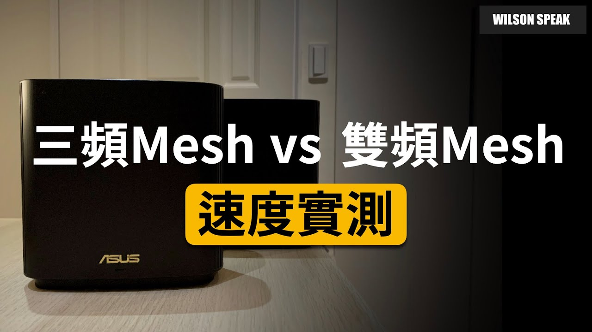

Mesh 雙頻還是三頻？先看多出的頻段要拿來做什麼

原片發布 2020-06-29 · 點封面看原片。
選 Mesh 時，雙頻和三頻常讓人猶豫：多出的頻段到底幫誰？先把手機連節點、節點連回主機這兩段路分開看，會比直接看包裝上的總速率容易理解。
Wilson 在 2020 年的影片比較不同 Mesh 組合。這篇延伸整理選購時要問的問題，不把當年的測試套成所有機型的通則，也不只靠頻段數替你下結論。
三頻不是三台裝置才用得完
雙頻、三頻描述的是無線系統提供的頻段配置，不是能連幾台裝置。三頻可能是 2.4 GHz 加上兩組 5 GHz，也可能有 6 GHz；要看實際型號，不能從「三頻」兩個字就猜到硬體和功能。
額外頻段能做什麼，還取決於系統如何分配、終端支援，以及你家的流量。某個頻段若供節點回程使用，手機就未必能直接利用它；若提供給終端，也要終端支援。包裝上的多頻段速率不能直接相加，當成一台手機的速度。
先看節點回程，才知道頻段怎麼分工
手機接上房間節點後，資料還要回到主節點，這一段就是回程。採無線回程時，回程與終端可能競爭無線資源。部分相容的三頻系統可安排專用回程，減少某些資源共用，但不是所有三頻都用同一種方式。
專用回程仍要面對距離、隔間、干擾和硬體能力，不能保證三頻無損、雙頻一定減半。把節點放在已經收不到上游訊號的角落，多一個頻段也不會自動接好這段路。擺位要連同回程品質一起看。
連線角色示意。三頻不保證專用回程，也不能把所有頻段標示速率當作單一裝置速度。
有線回程之後，比較重點會改變
若能用網路線連接節點，而且系統支援該拓樸，有線回程可讓節點間的資料不必完全倚靠無線。這時比較重點會轉向終端接入能力、多裝置使用、網路孔規格與功能。
原先的無線回程頻段能否開放給終端、要不要另外設定，都依機型與韌體而異。不能直接說有線之後三頻沒用，也不能保證雙頻就和三頻一樣快。先看你真的會用到的功能，才知道預算該花在哪裡。
兩套系統比較，要把測試條件放在一起
看評測先找測試條件：回程是有線還是無線、節點隔幾道牆、用什麼終端、連的是外網還是本地伺服器。不同條件的結果可以各自參考，但不能把差異全部歸因於頻段數。
在家比較時，把節點和終端放在相同位置，再測常用工作。要看傳檔時間，也要看視訊是否中斷、遊戲是否波動。距離拉遠後哪套較好，要由實際配置決定，不能先假設三頻的衰減一定較小。
- 記錄回程方式、主節點與子節點位置。
- 固定終端、測試目的地和使用情境。
- 分別觀察常用房間和多人同時使用時的表現。
同品牌也要確認混搭與功能支援
同品牌不代表任意兩台都能組 Mesh，更不代表新舊設備混搭後所有功能都保留。先查系統相容清單、韌體需求與官方拓樸說明，再確認你的設備各自能負責什麼角色。
某段連線只能採兩端共同支援的方式，但不等於加一台雙頻節點就讓全系統都變雙頻。專用回程、頻段開放與混搭行為都要看官方定義。下單前列出完整機型，比分別問每台「有沒有 Mesh」更準。
照家裡的路徑選，不必追最多的頻段
先看房間是否已有可用網路孔，拉線需要多少施工，再決定回程方式。如果只能走無線，就把回程頻段、擺位和隔間列入比較；若已有線，則同時看終端需求與功能，不用為規格名稱先做決定。
最後也要想維護：能否看出節點接到哪裡、如何確認回程、更新韌體是否方便。先把連線路徑說清楚，再找符合條件的系統，會比只追最多頻段更容易選到適合家裡的組合。
你可能還想問
只有兩台手機，三頻一定沒有幫助嗎？
不一定。如果系統利用額外頻段改善無線回程，終端數少也可能受益；但效果仍受擺位與設備限制，不能只靠台數判斷。
用了三頻卻和舊系統差不多，是不是壞了？
先看測試是否被電信方案、終端或其他環節限制，再查回程實際採用的方式。沒有變快不等於故障，也可能原本就沒有那一段瓶頸。
三頻一定有兩組 5 GHz 嗎？
不一定，也有包含 6 GHz 的配置。查清楚型號的頻段組成、當地支援與回程安排，不能把不同三頻系統視為相同規格。
接著看 Wilson 的原片
WiFi mesh 三頻機比較快？ AiMesh vs ZenWiFi | Mesh WiFi 路由器| WiFi 分享器 | 選購策略- Wilson說給你聽
前往 YouTube 觀看 ↗影片與參考資料
原片發布 2020-06-29。文章整理 2026-11-14，依影片公開標題、說明延伸，並以官方資料校訂。實際設定請對照你的型號與版本。